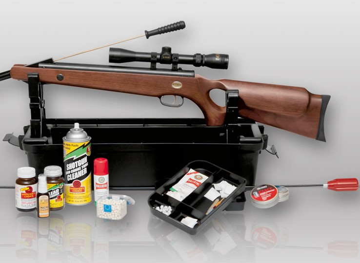

Догляд за зброєю



Довговічність і надійна служба рушниці повністю залежить від його змісту і якісного догляду. При роботі зі зброєю варто пам'ятати, що сам постріл і що виникає в стовбурі тиск не так розхитують механізм при справності зброї, як несправний стан дотичних частин, заряди невідповідними за розмірами гільз і безцільне ляскання затворами.
Основні проблеми, що вражають зброю:-
У першу чергу в рушницю розхитується затвор і починають підтиратися його функціональні частини - гаки стовбурів, засувки і болт, на якому здійснюється обертання стовбура. У разі ж коли рушницю повністю закрито жодна з частин не відчуває на собі настільки шкідливого для функціональності тертя, яке завжди виникає при відкритті і закритті. Головним ворогом механізму стає туго входить гільза, а також зміст болта і затвора в багнюці. Якщо не виконувати обтірку і своєчасне змазування болтів і гачків попереду колодки перед складанням зброї, то на цих елементах може осідати пил і тверді частинки, які надають згубний вплив - стирання поверхонь тертьових компонентів і розробку гнізд. Щоб уникнути разбалтиванія зброї в колодці, необхідно містити всі вирізи в чистоті, охороняти їх від осідання пилу, а також перед складанням виконувати змазування болта і стовбурних вирізів якісною олією.
-
Наступним головним правилом стає робота з підходящими патронами. Якщо гільзи роздулися і входять в стовбур туго, то їх потрібно калібрувати перед спорядженням. Також необхідно подбати про оберігання зброї від попадання вологи. Навіть осіла на дерев'яні частини зброї вона може привести до розбухання і подальшого відшарування матеріалу від металевих частин. При подальшому просиханні частина вологи може опинитися на металі і сприяти його корозії. Звичайно ж, це не остання проблема догляду.
-
Потрібно ретельно стежити за справним станом бойків: надмірно загострені і довгі бойки можуть пробити метал пістона і сприяти попаданню газів в отвір бойків. Це процес надає окислення металу, сприяє виникненню іржі і не дає бойку вільно ходити в стволі. Після цього частішають осічки.
-
А от з замками в зброї практично не буває проблем - вони не піддаються ураженню газами і вологістю, за винятком тих випадків, коли зброя падає у воду. Їх рекомендується виймати і очищати один раз на рік.
-
Найпростішим у догляді стає ствол зброї. Якщо після кожного полювання прочищати ствол (для цього відмінно підійде лужний склад, РЧС, масло РЖ) і рясно змащувати його нейтральним маслом, то ймовірність пошкодження стовбура буде мінімальною. Після стрілянини малодимние порохом потрібно проводити поетапну очистку зброї. На початку його обробляють маслом , а вже через кілька днів проводять сухе очищення, яка допомагає видалити нагар. Після чищення стовбур знову обробляється маслами з лужною реакцією. Після цього наліт не виявляється. Після здійснюється ретельна протирання ганчіркою, льоном або клоччям. Тільки після очищення рушниці ствол потрібно змастити маслом та протерти на наступний день. Не варто проводити часткову очистку і легку протирку стовбура. Неякісне очищення сприяє прояву нальоту та іржі.
При використанні матеріалів сайту, посилання на Wild Duck обов'язкове
Сторінку створено у 2022 році